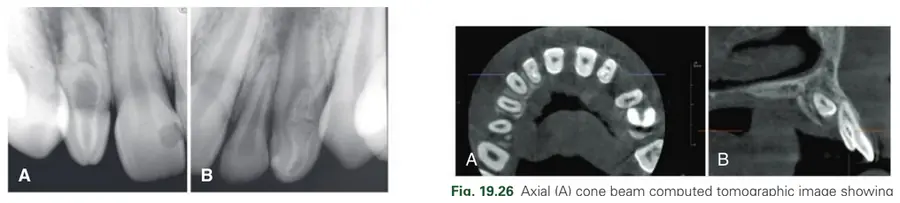
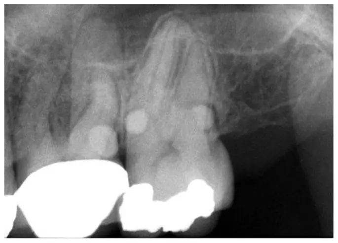

نسخه استخراجشده؛ ترجمه یا تأیید علمی انجام نشده است. وضعیت: captured
سه نام برای یک طیف واحد — درجههای مختلف تاخوردگی سطح مینا به درون دندان: خفیفترین شکل دنس اینواژیناتوس و شدیدترین شکل اودونتوم متسع (dilated odontome) است.

و طبقهبندی اولر — چهار درجه بر پایهی اینکه تاخوردگی تا کجا میرود:
و یک تمایز بافتی ظریف: تاخوردگی کرونال از فرورفتگی ارگان مینا به درون پاپیلای دندانی میآید و با مینا پوشیده است؛ تاخوردگی رادیکولار از غلاف اپیتلیالی هرتویگ میآید و با سمنتوم پوشیده است. پرمولر اول و مولر دوم مندیبل بیشتر مستعد نوع رادیکولارند.
محل و شیوع: بیشتر در لترال دائمی ماگزیلا، سپس سانترال ماگزیلا، پرمولر و کانین. در تاج دندانهای مندیبل و در دندانهای شیری نادر است. حدود نیمی از موارد قرینهاند. شیوع در سفیدپوستان و آسیاییها حدود ۵ درصد و در افراد آفریقاییتبار نادر.
و چرا این آنومالی مهم است؟ خطر نکروز پالپ. کف تاخوردگی تنها با دیوارهی نازکی از مینا و عاج از پالپ جدا شده، و آن مینا «اغلب نازک، بیکیفیت، و گاهی در برخی نواحی غایب» است. دهانهی تاخوردگی از راه مسیری باریک و تنگ با دهان در ارتباط است — پیتی که «تمیز نگه داشتنش دشوار اگر نه ناممکن است». و گاهی کانالهای ظریفی میان تاخوردگی و پالپ وجود دارد که حتی بدون پوسیدگی بیماری پالپ میسازد.
روی تصویر: مینای پوشانندهی تاخوردگی اوپکتر از ساختار اطراف است و بهصورت رادیولوسنسی قطرهاشکی وارونه با حاشیهی اوپک دیده میشود. اگر تاخوردگی وسیع باشد، تاج بدشکل و فورامن آپیکال پهن است — و علت شایع فورامن باز، توقف تکامل ریشه در پی نکروز پالپ است. در شدیدترین شکل، دندان تقریباً شکل دونات میگیرد: تودهی سخت اوپک با ناحیهی مرکزی رادیولوسنت.
دنس اواژیناتوس، آینهی دنس اینواژیناتوس است: بهجای تاخوردن به درون، ارگان مینا به بیرون برجسته میشود و یک توبرکول پوشیده از مینا میسازد — معمولاً وسط سطح اکلوزال پرمولر (نام دیگرش پرمولر لیانگ).

و خطرش دقیقاً در همان جایی است که چشم نمیبیند: توبرکول «اغلب یک هستهی عاجی دارد، و یک شاخ پالپ بسیار باریک مکرراً به درون آن امتداد مییابد». پس ساییده شدن، شکستن یا برداشتن بیملاحظهی جراحی این توبرکول میتواند پالپ را اکسپوز کند. بیشتر در دندانهای مندیبل و اغلب دوطرفه، با بالاترین فراوانی در جمعیتهای آسیایی و بومی.
و پس از ساییده شدن چه میبینی؟ «یک فاست دایرهای کوچک با یک پیت تیرهی ریز در مرکز» — نشانهای که بهراحتی نادیده گرفته میشود.
کاسپ تالون: هایپرپلازی سینگولوم انسیزور ماگزیلا یا مندیبل که یک کاسپ اضافه میسازد، با مینای طبیعی پوشیده. از لبهی انسیزال که نگاه کنی، دندان T شکل است. ممکن است شاخ پالپ داشته باشد یا نداشته باشد. شیوعش در دندانهای مرتبط با سندرمهای شکاف کام بیشتر گزارش شده.
و اشتباه تصویری رایجش: تصویر اوپک کاسپ تالون روی تاج سوپرایمپوز میشود و پیش از رویش میتواند شبیه یک دندان اضافه به نظر برسد. راهحل: تصویر دوم با تکنیک پارالاکس یا شیء باکال تا پیوستگیاش با دندان اثبات شود.
مروارید مینایی (enamel pearl): تودهی مینایی که احتمالاً از سلولهای غلاف هرتویگ پیش از از دست دادن توان میناسازی ساخته میشود. معمولاً در یا نزدیک فورکای مولرها، در یا کمی آپیکال به CEJ. در مولرهای ماگزیلا در فورکای مزیال یا دیستال و در مندیبل در فورکای باکال یا لینگوال. میتواند هستهی عاجی و بهندرت شاخ پالپ داشته باشد و مستعدکنندهی پاکت پریودنتال است.
و ترفند افتراق از پالپ استون: زاویهی عمودی تابش را تغییر بده؛ تصویر مروارید مینایی از اتاقک پالپ دور میشود، ولی پالپ استون در جای خود میماند. و اگر جرم باشد، معمولاً در بالین قابل لمس است. برای رد سوپرایمپوزیشن ریشهها، زاویهی افقی را کمی عوض کن.
و دو نقص مینای اکتسابی که در ترکیب با هم میآیند:
و یک نکتهی زمانی که ارزش تشخیصی دارد: چون تاج این دندانها حدود یکسالگی شکل میگیرد، تصویر میتواند نشانههای سیفلیس مادرزادی را ۴ تا ۵ سال پیش از رویش نشان دهد.